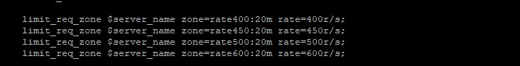

Rate limiting with NGINX
Temu su rezervirali : Renato Punčec Petar Rog
Sadržaj |
NGINX
Nginx je Web server i reverse proxy server. Izvorni kod Nginx-a napisao je Igor Sysoev. To je otvoreni i besplatni alat koji nam u praksi pomaže kako bi limitirali http zahtjeve. Protokoli koje Nginx podržava su HTTP, SMTP, IMAP i POP3. Konkurenciju ovom alatu čine Apache, Microsoft IIS, LiteSpeed, Google Servers, Tomcat itd. Nginnx vezan je uz C10K problem. To je problem koji se odnosi na pitanje kako upravljati s desetak tisuća http zahtjeva.
{kind=link}
Slika gore prikazuje nam razvoj http poslužitelja zadnjih 7 godina. Vidimo kako je Nginx iz godine u godinu sve zastupljeniji. Stoga nas ne čude najnoviji rezultati iz 2018.godine. Gdje je prikazano kako skoro trećina koristi ovaj alat. Nginx je u fazi rasta upravo zbog toga jer pogoduje stranicama koje imaju veliku posjećenost, odnosno stranice prema kojima se generira veliki broj http zahtjeva. Zašto je to tako, objasnit ćemo na našem primjeru iz prakse.
{kind=link}
Prema Netcraftu u siječnju 2018.godine, Nginx je posluživao 36,7 % najprometnijih web stranica. Neki od najvećih „uspjeha“ ovog alata su web mjesta poput Netflixa, Dropboxa, Facebooka, Wordpress.com, FastMail.FM itd.
Neke od koristi Nginx-a
1. Limitiranje http zahtjeva moguće je koristiti u sigurnosne svrhe, kao npr. za zaštitu od DDOS napada.
2. Nginx omogućuje sigurniji pristup podacima. Zbog toga jer ima HttpSslModule. To je modul koji nam služi za podešavanje SSL-a (generiranje i potpisivanje certifikata).
3. Ukoliko dođe do kakve greške, sustav radi ali sa smanjenim kapacitetom.
Nginx vs Apache
Nginx i Apache su podržani na Linux sustavima, no samo je Apache u cijelosti podržan od strane Microsoft Windowsa.
Drugi o NGINX-u
„Ocjenjivao sam NGINX Plus i bio sam zadivljen njegovom moći. Količina prometa koju NGINX Plus može podnijeti je nestvarna - čak i izvan naših potreba.“ –James Ridle, IT Operations Manager at Montana Interactive
„Dostupnost i skalabilnost su nevjerojatno važni, no sigurnost nam je najvažnija od svega. S obzirom kako zadovoljava sve naše uvjete NGINX Plus je naše sredstvo za kretanje unaprijed.“ Sean McElroy, VP of IT and CISO at Alkami Technology
Skalabilnost nam označuje ovisnost resursa u odnosu na količinu podataka. Dakle, ako za obradu duplo više podataka trebamo 4 puta više memorije ili 4 puta više vremena, to je loša skalabilnost. Ako nam treba duplo više vremena, to je prihvatljivo. Osobito ako se može paralelizirati.
„Imali smo skupu nadogradnju našeg trenutnog pružatelja usluga pa smo pogledali alternative. Otkrili smo da bi mogli više uraditi s NGINX Plus i to u četvrtini cijene trenutnog poslužitelja.“ Matt Blaha , Sr. Systems Engineer at Discovery Education
Vrste limita
Slijedi sintaksa i opis 3 vrste limitiranja koja smo koristili u praksi. Ima ih naravno puno više. Može se dodati na korisničkoj razini, serverskoj razini i geolokacijskog razini.
Basic rate limiting
limit_req_zone zone=myLimit:10m rate=10r/s
{kind=link}
Zone myLimit je naziv tog limita, a 10m označava 10 megabajta memorije koju može popuniti ovaj limiter (16 000 ip adresa zauzimaju cca 1 megabajt, tako da naša zona može primiti oko 160 000 ip adresa). Rate označava maksimalni broj upita (requesta) u sekundi. Taj period je podijeljen automatski na 10 jednakih perioda (slotova) po 100 milisekundi. Prvi upit se propušta, a svaki sljedeći u prvom slotu od 100 milisekundi se odbija (propada). I na taj način za svaki slot.
Ovaj limit radi na principu Leaky Bucket algoritma.
{kind=link}
Handling burst
limit_req zone=myLimit burst=20;
{kind=link}
Ime zone je myLimit i dodavanjem parametra burst=20 dobivamo dodatni slot od 20 pozicija koji koristimo. I dalje je period od 1 sekunde, te je moguce po 1 upit propustiti na svaki od 10 slotova. Kao u primjeru, u prvih 100 milisekundi dosla su dva upita (requesta), prvi se propusta a drugi se zapisuje u Queue. Kad krene drugi slot prvo se taj upit propusta, a svi ostali opet zapisuju u Queue na čekanje. Svi koji ne uspije propustiti propadaju.
Handling burst + nodelay
limit_req zone_myLimit burst=20 nodelay;
{kind=link}
Upotrebom nodelay parametra svi koji dolaze upiti (requesti) se propustaju do 20 upita po sekundi. Ovdje se ne gleda po slotovima i po kontinuiranom propuštanju. Svi ostali propadaju.
Primjeri iz prakse
Prvo otvorimo nginx.conf
Ovdje ćemo prikazati dva primjera i objasniti ih detaljnije. Prvi je limitiranje broja upita (requesta) na instalaciju. Preciznije, radi se o broju klikova, koji mogu preopteretiti instalaciju. Drugi je rate limit na login formu, prikazano je kako se zaštiti od forsiranja upisa korisničkog imena i lozinke te potvrđivanjem iste da bi se došlo možda do točne kombinacije i neovlaštenog ulaska u sustav.
{kind=link}
Obadva primjera su preventivne naravi i mogu pomoći u obrani od neželjenih posljedica.
Limitiranje broja ulaznih upita
Kako na instalaciju dolazi previše traffica u nerezonskim periodima dolazi do mogućnosti da se instalacija preopteretiti s ulaznim brojem upita (requestova). To može dovesti do nepravilnog rada (upiti propadaju, GUI sporo radi) ili do rušenja instalacije. Da bi se to spriječilo složen je NGINX rate limiting. 
{kind=link}
Definirano je par različitih limitera u glavnom configu za nginx (nginx.conf). Ime s kojim se pozivaju su rate400, rate450, rate500, rate600.
{kind=link}
U ovom configu pozvan je jedan limiter (rate500). Dodan mu je parametar burst=50.
Limitiranje broja upita u login formu
Drugi primjer upotrebe rate limita nginxa je forsiranje login forme i pokušaj upada u sustav. Može se složiti limit na login formi tako da se izbjegne sigurnosni rizik.
Sljedećim primjerom ćemo limitirati broj upita (requesta) s jedne ip adrese, to jest neće biti moguće forsirati kombinaciju korisničkog imena i lozinke u nedogled.
Prvo se kreira novi novi rate limit:
limit_req_zone $binary_remote_addr zone=login:10m rate=1r/s
Time se kreira memorija zvana „login“ da se sprema log svih IP adresa koje pristupaju webu i njezina veličina. U našem slučaju 10 megabajta što je dovoljno za spremanje 160 000 upita. Ovim kodom dopušten je 1 upit(request) po sekundi.
Nakon toga u dodaje se na server sljedeći kod:
location /account/login/ { limit_req zone=login burst=5 }
Ovdje vidimo da se limitira URL /account/login sto je login page. S parametrom burst propadaju upiti nakon što je red čekanja od 5 maksimalno napuni.
Zaključak
Ovim alatom možemo preventivno djelovati na naš server te tako kontrolirati i definirati maksimalan broj upita (requesta). Koristi se da se spriječi neovlašteni pristup i preopterećenje sustava lažnim (fraud) prometom.
Literatura
1. https://www.nginx.com/blog/rate-limiting-nginx
2. https://lincolnloop.com/blog/rate-limiting-nginx
3. https://dzone.com/articles/nginx-rate-limiting
5. https://www.slideshare.net/Nginx/rate-limiting-with-nginx-and-nginx-plus